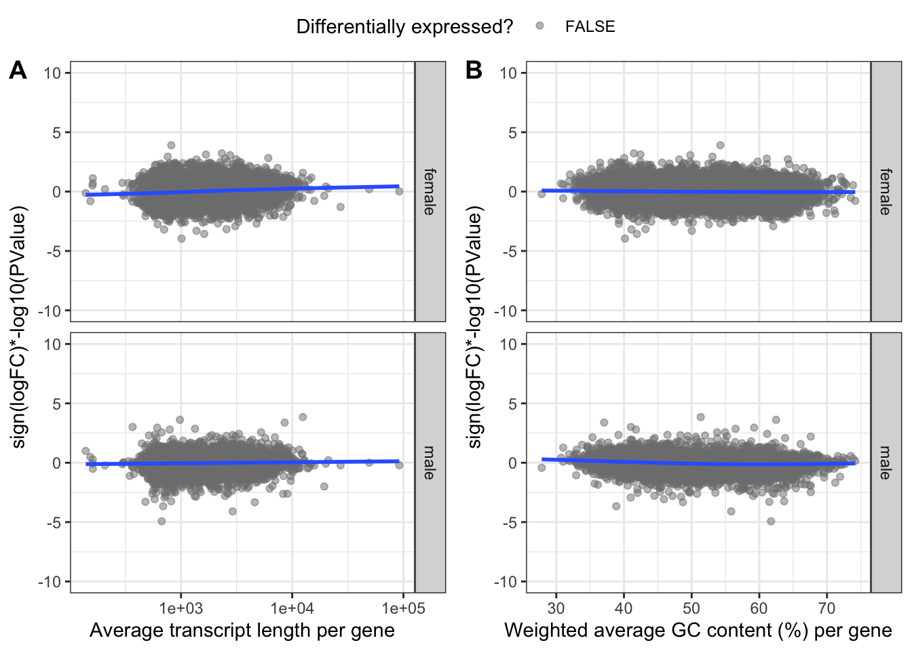
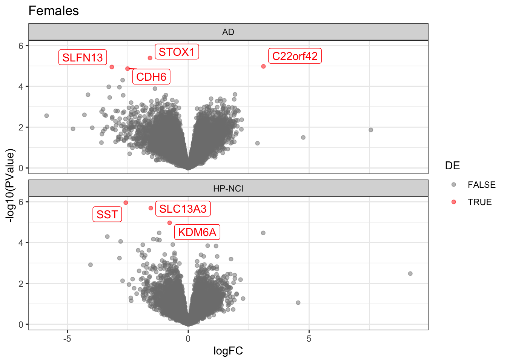
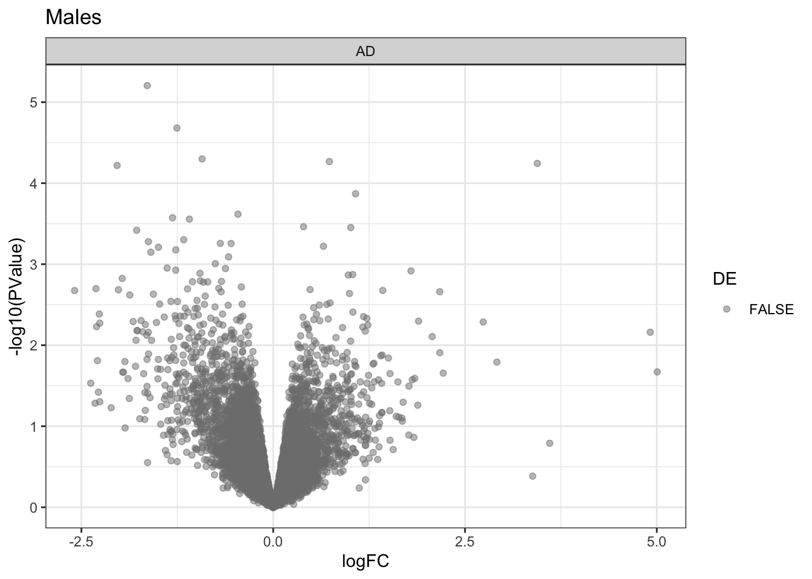

DGE exploration with CQN
Karissa Barthelson
2021-10-27
Last updated: 2021-10-29
Checks: 7 0
Knit directory: 2021-rosmap-ire/
This reproducible R Markdown analysis was created with workflowr (version 1.6.2). The Checks tab describes the reproducibility checks that were applied when the results were created. The Past versions tab lists the development history.
Great! Since the R Markdown file has been committed to the Git repository, you know the exact version of the code that produced these results.
Great job! The global environment was empty. Objects defined in the global environment can affect the analysis in your R Markdown file in unknown ways. For reproduciblity it’s best to always run the code in an empty environment.
The command set.seed(20211022) was run prior to running the code in the R Markdown file. Setting a seed ensures that any results that rely on randomness, e.g. subsampling or permutations, are reproducible.
Great job! Recording the operating system, R version, and package versions is critical for reproducibility.
Nice! There were no cached chunks for this analysis, so you can be confident that you successfully produced the results during this run.
Great job! Using relative paths to the files within your workflowr project makes it easier to run your code on other machines.
Great! You are using Git for version control. Tracking code development and connecting the code version to the results is critical for reproducibility.
The results in this page were generated with repository version e988a78. See the Past versions tab to see a history of the changes made to the R Markdown and HTML files.
Note that you need to be careful to ensure that all relevant files for the analysis have been committed to Git prior to generating the results (you can use wflow_publish or wflow_git_commit). workflowr only checks the R Markdown file, but you know if there are other scripts or data files that it depends on. Below is the status of the Git repository when the results were generated:
Ignored files:
Ignored: .DS_Store
Ignored: .Rapp.history
Ignored: .Rhistory
Ignored: .Rproj.user/
Ignored: code/.DS_Store
Ignored: data/.DS_Store
Ignored: data/confidentialData/
Staged changes:
Modified: analysis/_site.yml
Note that any generated files, e.g. HTML, png, CSS, etc., are not included in this status report because it is ok for generated content to have uncommitted changes.
These are the previous versions of the repository in which changes were made to the R Markdown (analysis/DGE.Rmd) and HTML (docs/DGE.html) files. If you’ve configured a remote Git repository (see ?wflow_git_remote), click on the hyperlinks in the table below to view the files as they were in that past version.
| File | Version | Author | Date | Message |
|---|---|---|---|---|
| Rmd | 2faac44 | Karissa Barthelson | 2021-10-29 | more analysis. after ire |
| html | 2faac44 | Karissa Barthelson | 2021-10-29 | more analysis. after ire |
Differential gene expression analysis
library(tidyverse)
library(magrittr)
library(edgeR)
library(cqn)
library(pander)
library(scales)
library(pheatmap)
library(ggpubr)
library(ggfortify)
library(ggrepel)
library(ggeasy)
theme_set(theme_bw())
panderOptions("big.mark", ",")
panderOptions("table.split.table", Inf)
panderOptions("table.style", "rmarkdown")In this analysis, I will explore the effects of removing the batch effects present during the generation of this dataset. In the initial QC doc, I noted that library preparation/RNA-seq batch still appears to drive some of the variation in this dataset. Lagomarsino et al. 2021 noted that they used ComBat from the sva package to remove batch effects. However, Nygaard et al. 2016 noted that this may not be the most ideal method.
Therefore, I will follow the edgeR users guide for removing batch effects. This method uses an additive model formular to block the effect of batch, then test for differential expression between groups of interest.
In humans, there is an effect of sex on the brain transcriptome. Therefore, I will analyse males and females seperately.
I imported the dge object generated in the initial QC doc. This dge object contains the expression values per sample after:
- filtering lowly expressed genes (i.e. genes which have a logCPM < 2)
- Omitting one of the technical replicates of each iPSC sample which had the lower RIN
dge <- readRDS("data/confidentialData/dge.rds")
# edit the covariates to be factors rather than character/integers
dge$samples %<>%
dplyr::select(1:11, diagnosis, apoeGenotype, pmi, sex, yearsEducation, CERAD, Braak) %>%
mutate(diagnosis = case_when(
diagnosis == "no cognitive impairment" ~ "NCI",
diagnosis == "Alzheimer Disease" ~ "AD"
) %>%
factor(levels = c("NCI", "AD")),
sex = as.factor(sex),
apoeGenotype = factor(apoeGenotype, levels = c("E3/E3", "E2/E3", "E3/E4" ,"E4/E4", "E2/E2")),
CERAD = as.factor(CERAD),
Braak = as.factor(Braak)
)
# extract male samples
maleSamps <- dge$samples %>%
dplyr::filter(sex == "male") %>%
.$sample
# extract female samples
femSamps <- dge$samples %>%
dplyr::filter(sex == "female") %>%
.$sample
# Subset the inital DGE object by sex
dgeList <- list(
female = dge[,femSamps],
male = dge[,maleSamps]
)Inital differential gene expression analysis
Only diagnosis in the model matrix
designs_1 <- list(
female = model.matrix(~libraryBatch + diagnosis, data = dgeList$female$samples) %>%
set_colnames(str_remove(colnames(.), pattern = "diagnosis")),
male = model.matrix(~libraryBatch + diagnosis, data = dgeList$male$samples) %>%
set_colnames(str_remove(colnames(.), pattern = "diagnosis"))
)
# git the GLMs
fit_1_list <- list(
female = dgeList$female %>%
estimateDisp(designs_1$female) %>%
glmFit(designs_1$female),
male = dgeList$male %>%
estimateDisp(designs_1$male) %>%
glmFit(designs_1$male)
)
toptable_1 <- fit_1_list %>%
sapply(function(x) {
x %>%
glmLRT(coef = "AD") %>%
topTags(n = Inf) %>%
.[["table"]] %>%
as_tibble() %>%
arrange(PValue) %>%
mutate(
DE = FDR < 0.05,
) %>%
dplyr::select(
gene_name, logFC, logCPM, PValue, FDR, DE, everything()
)
}, simplify = FALSE)Visualiastions
toptable_1 %>%
bind_rows(.id = "coef") %>%
ggplot(aes(y = -log10(PValue), x = logFC, colour = DE)) +
geom_point(
alpha = 0.5
) +
facet_wrap(~coef, ncol = 1) +
theme_bw() +
geom_label_repel(
aes(label = gene_name),
data = . %>% dplyr::filter(FDR < 0.05),
show.legend = FALSE
) +
theme(legend.position = "none") +
scale_color_manual(values = c("grey50", "red"))Volcano plot of gene expression in male and female AD subjects relative to no cognitive impairment controls. No genes are found to be significantly DE (at FDR < 0.05)
| Version | Author | Date |
|---|---|---|
| 2faac44 | Karissa Barthelson | 2021-10-29 |
Check for GC and Length bias
Mandelboum et. al 2019 demonstrated a prevalent sample-specific length effect that leads to a strong association between gene length and fold-change estimates between RNA-seq samples. This means that the changes to expression of genes must be assessed relative to its length and %GC. In the plots below, %GC content is shown against the ranking statistic, using -log10(p) multiplied by the sign of log fold-change. A small amount of length bias is noted particularly in females.
ggarrange(
toptable_1 %>%
bind_rows(.id = "coef") %>%
mutate(rankstat = sign(logFC)*-log10(PValue)) %>%
ggplot(aes(x = length, y = rankstat)) +
geom_point(
aes(colour = DE),
alpha = 0.5
) +
geom_smooth(se = FALSE, method = "gam") +
facet_grid(rows = vars(coef)) +
theme_bw() +
theme(legend.position = "none") +
scale_color_manual(values = c("grey50", "red")) +
scale_x_log10()+
labs(x = "Average transcript length per gene",
colour = "Differentially expressed?",
y = "sign(logFC)*-log10(PValue)") +
coord_cartesian(ylim = c(-10, 10)),
toptable_1 %>%
bind_rows(.id = "coef") %>%
mutate(rankstat = sign(logFC)*-log10(PValue)) %>%
ggplot(aes(x = gc_content, y = rankstat)) +
geom_point(
aes(colour = DE),
alpha = 0.5
) +
geom_smooth(se = FALSE, method = "gam") +
facet_grid(rows = vars(coef)) +
theme_bw() +
theme(legend.position = "none") +
scale_color_manual(values = c("grey50", "red")) +
coord_cartesian(ylim = c(-10,10)) +
labs(x = "Weighted average GC content (%) per gene",
colour = "Differentially expressed?",
y = "sign(logFC)*-log10(PValue)"),
common.legend = TRUE,
labels = "AUTO"
) 
| Version | Author | Date |
|---|---|---|
| 2faac44 | Karissa Barthelson | 2021-10-29 |
Conditional Quantile Normalisation
A method to deal with any observed bias for differnetial expression and %GC or gene length is to use Conditionl Quantile Normalisation (cqn). In cqn, a gene and sample-level offset is calculated for each count which takes into account any systemic bias, such as that observed in the plots before. The resultant glm.offset values were added to the original DGEList object, and all dispersion estimates were calculated.
cqn <- cqn(
counts = dge$counts,
x = dge$genes$gc_content,
lengths = dge$genes$length,
sizeFactors = dge$samples$lib.size
)
# Set some colours for plotting
diagColours <- viridis_pal(end = 0.8)(2)
names(diagColours) <- levels(dge$samples$diagnosis)par(mfrow = c(1, 2))
cqnplot(cqn, n = 1, xlab = "GC Content", col = diagColours)
cqnplot(cqn, n = 2, xlab = "Length", col = diagColours)
legend("bottomright", legend = levels(dge$samples$diagnosis), col = diagColours, lty = 1)
| Version | Author | Date |
|---|---|---|
| 2faac44 | Karissa Barthelson | 2021-10-29 |
# Make a copy of the DGE so that cqn offset can be added
dge_cqn <- dge
dge_cqn$offset <- cqn$glm.offset Repeat PCA after cqn
A PCA was repeated after CQN had been applied. Very minimal effect is observed of cqn. This would be expected though, as the bias obsevred in the initial differential expression analysis was small as well.
cpmPostNorm <- cqn %>%
with(y + offset)
ggarrange(
cpm(dge, log = TRUE) %>%
t() %>%
prcomp() %>%
autoplot(data = tibble(sample = rownames(.$x)) %>%
left_join(dge$samples),
colour = "libraryBatch",
shape = "diagnosis",
size = 4) +
ggtitle("Before CQN"),
cpmPostNorm %>%
t() %>%
prcomp() %>%
autoplot(data = tibble(sample = rownames(.$x)) %>%
left_join(dge$samples),
colour = "libraryBatch",
shape = "diagnosis",
size = 4) +
ggtitle("After CQN"),
common.legend = TRUE
)
| Version | Author | Date |
|---|---|---|
| 2faac44 | Karissa Barthelson | 2021-10-29 |
Repeat DGE after cqn
# Repeat the subsetting of the dge in to males and females
dgeList_cqn <- list(
female = dge_cqn[,femSamps],
male = dge_cqn[,maleSamps]
)
designs_cqn <- list(
female = model.matrix(~libraryBatch + diagnosis, data = dgeList_cqn$female$samples) %>%
set_colnames(str_remove(colnames(.), pattern = "diagnosis")),
male = model.matrix(~libraryBatch + diagnosis, data = dgeList_cqn$male$samples) %>%
set_colnames(str_remove(colnames(.), pattern = "diagnosis"))
)
# Fit the GLMs
fit_1_list_cqn <-
list(
female = dgeList_cqn$female %>%
estimateDisp(designs_cqn$female) %>%
glmFit(designs_cqn$female),
male = dgeList_cqn$male %>%
estimateDisp(designs_1$male) %>%
glmFit(designs_cqn$male)
)
toptable_cqn <- fit_1_list_cqn %>%
sapply(function(x) {
x %>%
glmLRT(coef = "AD") %>%
topTags(n = Inf) %>%
.[["table"]] %>%
as_tibble() %>%
arrange(PValue) %>%
mutate(
DE = FDR < 0.05,
) %>%
dplyr::select(
gene_name, logFC, logCPM, PValue, FDR, DE, everything()
)
}, simplify = FALSE)Visualiastions
toptable_cqn %>%
bind_rows(.id = "coef") %>%
ggplot(aes(y = -log10(PValue), x = logFC, colour = FDR)) +
geom_point(
alpha = 0.5
) +
facet_wrap(~coef, ncol = 1) +
theme_bw() +
geom_label_repel(
aes(label = gene_name),
data = . %>% dplyr::filter(FDR < 0.05),
show.legend = FALSE
) +
scale_color_continuous(type = "viridis", end = 0.9, direction = -1)Volcano plot of gene expression in male and female AD subjects relative to no cognitive impairment controls after CQN. No genes are found to be significantly DE (at FDR < 0.05)
| Version | Author | Date |
|---|---|---|
| 2faac44 | Karissa Barthelson | 2021-10-29 |
toptable_cqn %>%
bind_rows(.id = "coef") %>%
ggplot(aes(y = logFC, x = logCPM, colour = FDR)) +
geom_point(
alpha = 0.5
) +
facet_wrap(~coef, ncol = 1) +
theme_bw() +
geom_label_repel(
aes(label = gene_name),
data = . %>% dplyr::filter(FDR < 0.05),
show.legend = FALSE
) +
scale_color_continuous(type = "viridis", end = 0.9, direction = -1)MD plot of gene expression in male and female AD subjects relative to no cognitive impairment controls after CQN. No genes are found to be significantly DE (at FDR < 0.05)
| Version | Author | Date |
|---|---|---|
| 2faac44 | Karissa Barthelson | 2021-10-29 |
Check for GC and Length bias again
A minor improvement of gene length is observed after applying cqn.
ggarrange(
# Length before cqn
toptable_1 %>%
bind_rows(.id = "coef") %>%
mutate(rankstat = sign(logFC)*-log10(PValue)) %>%
ggplot(aes(x = length, y = rankstat)) +
geom_point(
aes(colour = DE),
alpha = 0.5
) +
geom_smooth(se = FALSE, method = "gam") +
facet_grid(rows = vars(coef)) +
theme_bw() +
theme(legend.position = "none") +
scale_color_manual(values = c("grey50", "red")) +
scale_x_log10()+
labs(x = "Average transcript length per gene",
colour = "Differentially expressed?",
y = "sign(logFC)*-log10(PValue)") +
coord_cartesian(ylim = c(-5, 5)) +
ggtitle("Gene length before CQN"),
toptable_cqn %>%
bind_rows(.id = "coef") %>%
mutate(rankstat = sign(logFC)*-log10(PValue)) %>%
ggplot(aes(x = length, y = rankstat)) +
geom_point(
aes(colour = DE),
alpha = 0.5
) +
geom_smooth(se = FALSE, method = "gam") +
facet_grid(rows = vars(coef)) +
theme_bw() +
theme(legend.position = "none") +
scale_color_manual(values = c("grey50", "red")) +
scale_x_log10()+
labs(x = "Average transcript length per gene",
colour = "Differentially expressed?",
y = "sign(logFC)*-log10(PValue)") +
coord_cartesian(ylim = c(-5, 5)) +
ggtitle("Gene length after CQN"),
common.legend = TRUE)
| Version | Author | Date |
|---|---|---|
| 2faac44 | Karissa Barthelson | 2021-10-29 |
ggarrange(
# GC before cqn
toptable_1 %>%
bind_rows(.id = "coef") %>%
mutate(rankstat = sign(logFC)*-log10(PValue)) %>%
ggplot(aes(x = gc_content, y = rankstat)) +
geom_point(
aes(colour = DE),
alpha = 0.5
) +
geom_smooth(se = FALSE, method = "gam") +
facet_grid(rows = vars(coef)) +
theme(legend.position = "none") +
scale_color_manual(values = c("grey50", "red")) +
coord_cartesian(ylim = c(-10,10)) +
labs(x = "Weighted average GC content (%) per gene",
colour = "Differentially expressed?",
y = "sign(logFC)*-log10(PValue)") +
ggtitle("GC Before CQN"),
# GC after cqn
toptable_cqn %>%
bind_rows(.id = "coef") %>%
mutate(rankstat = sign(logFC)*-log10(PValue)) %>%
ggplot(aes(x = gc_content, y = rankstat)) +
geom_point(
aes(colour = DE),
alpha = 0.5
) +
geom_smooth(se = FALSE, method = "gam") +
facet_grid(rows = vars(coef)) +
theme_bw() +
theme(legend.position = "none") +
scale_color_manual(values = c("grey50", "red")) +
coord_cartesian(ylim = c(-10,10)) +
labs(x = "Weighted average GC content (%) per gene",
colour = "Differentially expressed?",
y = "sign(logFC)*-log10(PValue)") +
ggtitle("GC after CQN"),
common.legend = TRUE
) 
| Version | Author | Date |
|---|---|---|
| 2faac44 | Karissa Barthelson | 2021-10-29 |
Manhatten plot to check for chromosome-specific effects
Next, an assessment was performed to determine whether anything strange going on across chromosomes. No obvious peaks are observed.
chrst <- toptable_cqn %>%
lapply(function(x) {
x %>%
dplyr::filter(chromosome %in% seq(1:22)) %>%
group_by(gene_id) %>%
mutate(mid = mean(c(start, end))) %>%
ungroup %>%
mutate(chromosome = factor(chromosome, levels = seq(1:22))) %>%
group_by(chromosome) %>%
summarise(chrLen = max(mid)) %>%
mutate(chrSt = cumsum(chrLen)-chrLen) %>%
dplyr::select(-chrLen)
}) %>%
bind_rows() %>%
unique
man <- toptable_cqn %>%
lapply(function(x) {
x %>%
dplyr::filter(chromosome %in% seq(1:22)) %>%
left_join(chrst %>%
mutate(chromosome = factor(chromosome, levels = seq(1:22)))
) %>%
group_by(gene_id) %>%
mutate(mid = mean(c(start, end))) %>%
ungroup %>%
dplyr::arrange(mid, chromosome) %>%
mutate(midCum = chrSt + mid)
})
axis <-
man$female %>%
mutate(chromosome = factor(chromosome, levels = seq(1:22))) %>%
group_by(chromosome) %>%
dplyr::arrange(chromosome) %>%
summarize(center = (max(midCum) + min(midCum)) / 2) %>%
mutate(
colour = rep(c("grey40", "black"), length.out = 22)
)
man %>%
bind_rows(.id = "coef") %>%
mutate(chromosome = factor(chromosome, levels = seq(1:22))) %>%
ggplot(aes(x = midCum, y = logCPM)) +
theme_bw() +
geom_point(aes(color=chromosome), alpha = 0.5, size = 1) +
scale_color_manual(values = axis$colour ) +
scale_x_continuous(label = axis$chromosome, breaks = axis$center) +
labs(x = "Chromosome", y = expression(paste(log[2], "CPM"))) +
facet_wrap(~coef, ncol = 1) +
geom_text_repel(data = dplyr::filter(bind_rows(man), DE == TRUE),
aes(label = gene_name)
) +
theme(
legend.position="none",
panel.border = element_blank(),
panel.grid.major.x = element_blank(),
panel.grid.minor.x = element_blank()
) +
ggtitle("No observed biases for gene expression across chromosomes")
| Version | Author | Date |
|---|---|---|
| 2faac44 | Karissa Barthelson | 2021-10-29 |
man %>%
bind_rows(.id = "coef") %>%
mutate(chromosome = factor(chromosome, levels = seq(1:22))) %>%
ggplot(aes(x = midCum, y = -log10(PValue))) +
theme_bw() +
geom_point(aes(color=chromosome), alpha = 0.5, size = 1) +
scale_color_manual(values = axis$colour ) +
scale_x_continuous(label = axis$chromosome, breaks = axis$center) +
labs(x = "Chromosome", y = expression(paste(-log[10], "(p)"))) +
facet_wrap(~coef, ncol = 1) +
geom_text_repel(data = dplyr::filter(bind_rows(man), DE == TRUE),
aes(label = gene_name)
) +
theme(
legend.position="none",
panel.border = element_blank(),
panel.grid.major.x = element_blank(),
panel.grid.minor.x = element_blank()
) +
ggtitle("No observed bias for differential expression across chromosmoes")Conclusion
No evidence for DE genes are observed in this dataset, even after controlling for batch effects and sex.
# export data for further analysis
dge_cqn %>%
saveRDS("data/confidentialData/dge_cqn.rds")
toptable_cqn %>%
saveRDS("data/confidentialData/topTab_cqn.rds")
cpmPostNorm %>%
saveRDS("data/confidentialData/logCPM_cqn.rds")
fit_1_list_cqn %>%
saveRDS("data/confidentialData/glmFit_cqn.rds")
sessionInfo()R version 4.0.2 (2020-06-22)
Platform: x86_64-apple-darwin17.0 (64-bit)
Running under: macOS Mojave 10.14.3
Matrix products: default
BLAS: /Library/Frameworks/R.framework/Versions/4.0/Resources/lib/libRblas.dylib
LAPACK: /Library/Frameworks/R.framework/Versions/4.0/Resources/lib/libRlapack.dylib
locale:
[1] en_AU.UTF-8/en_AU.UTF-8/en_AU.UTF-8/C/en_AU.UTF-8/en_AU.UTF-8
attached base packages:
[1] splines stats graphics grDevices utils datasets methods
[8] base
other attached packages:
[1] ggeasy_0.1.3 ggrepel_0.9.1 ggfortify_0.4.12
[4] ggpubr_0.4.0 pheatmap_1.0.12 scales_1.1.1
[7] pander_0.6.4 cqn_1.34.0 quantreg_5.86
[10] SparseM_1.81 preprocessCore_1.50.0 nor1mix_1.3-0
[13] mclust_5.4.7 edgeR_3.30.3 limma_3.44.3
[16] magrittr_2.0.1 forcats_0.5.1 stringr_1.4.0
[19] dplyr_1.0.7 purrr_0.3.4 readr_1.4.0
[22] tidyr_1.1.3 tibble_3.1.2 ggplot2_3.3.5
[25] tidyverse_1.3.1 workflowr_1.6.2
loaded via a namespace (and not attached):
[1] nlme_3.1-152 matrixStats_0.59.0 fs_1.5.0 lubridate_1.7.10
[5] RColorBrewer_1.1-2 httr_1.4.2 rprojroot_2.0.2 tools_4.0.2
[9] backports_1.2.1 bslib_0.2.5.1 utf8_1.2.1 R6_2.5.0
[13] mgcv_1.8-36 DBI_1.1.1 colorspace_2.0-2 withr_2.4.2
[17] gridExtra_2.3 tidyselect_1.1.1 curl_4.3.2 compiler_4.0.2
[21] git2r_0.28.0 cli_3.0.0 rvest_1.0.0 xml2_1.3.2
[25] labeling_0.4.2 sass_0.4.0 digest_0.6.27 foreign_0.8-81
[29] rmarkdown_2.9 rio_0.5.27 pkgconfig_2.0.3 htmltools_0.5.1.1
[33] highr_0.9 dbplyr_2.1.1 rlang_0.4.11 readxl_1.3.1
[37] rstudioapi_0.13 farver_2.1.0 jquerylib_0.1.4 generics_0.1.0
[41] jsonlite_1.7.2 zip_2.2.0 car_3.0-11 Matrix_1.3-4
[45] Rcpp_1.0.7 munsell_0.5.0 fansi_0.5.0 abind_1.4-5
[49] lifecycle_1.0.0 stringi_1.6.2 whisker_0.4 yaml_2.2.1
[53] carData_3.0-4 grid_4.0.2 promises_1.2.0.1 crayon_1.4.1
[57] lattice_0.20-44 cowplot_1.1.1 haven_2.4.1 hms_1.1.0
[61] locfit_1.5-9.4 knitr_1.33 pillar_1.6.1 ggsignif_0.6.2
[65] reprex_2.0.0 glue_1.4.2 evaluate_0.14 data.table_1.14.0
[69] modelr_0.1.8 vctrs_0.3.8 httpuv_1.6.1 MatrixModels_0.5-0
[73] cellranger_1.1.0 gtable_0.3.0 assertthat_0.2.1 openxlsx_4.2.4
[77] xfun_0.24 broom_0.7.8 rstatix_0.7.0 later_1.2.0
[81] viridisLite_0.4.0 conquer_1.0.2 ellipsis_0.3.2